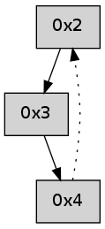

>> << IDX [start] -100 -25 -5 +0 +5 +25 +100 [265.111299038]
 Previous packets
----------------------------------------------------------------------
260.094071 beacon01(adaf) #0 coord=01,02,05,03,04 cycle=368.0ms assoc
-- color-indic=0 64 cb 19
260.104030 beacon02(adaf) #0 coord=01,02,05,03,04 cycle=368.0ms assoc 64 f1 b8
260.114029 beacon05(adaf) #0 coord=01,02,05,03,04 cycle=368.0ms assoc 64 ba f4
260.124028 beacon03(adaf) #0 coord=01,02,05,03,04 cycle=368.0ms assoc 64 39 12
260.134029 beacon04(adaf) #0 coord=01,02,05,03,04 cycle=368.0ms assoc 64 72 5e
260.145646 [Hello(4): seq=50 sym=2 sysInfo= stat=2:12,0,0,0]
----------------------------------------------------------------------
260.512173 beacon01(adaf) #0 coord=01,02,05,03,04 cycle=368.0ms assoc
-- color-indic=0 64 a3 b2
260.522130 beacon02(adaf) #0 coord=01,02,05,03,04 cycle=368.0ms assoc 64 99 13
260.532130 beacon05(adaf) #0 coord=01,02,05,03,04 cycle=368.0ms assoc 64 d2 5f
260.542131 beacon03(adaf) #0 coord=01,02,05,03,04 cycle=368.0ms assoc 64 51 b9
260.552131 beacon04(adaf) #0 coord=01,02,05,03,04 cycle=368.0ms assoc 64 1a f5
260.563732 [Hello(2): seq=549 sym=3 sysInfo= stat=3:7,0,0,0]
----------------------------------------------------------------------
260.930274 beacon01(adaf) #0 coord=01,02,05,03,04 cycle=368.0ms assoc
-- color-indic=0 64 74 2c
260.940231 beacon02(adaf) #0 coord=01,02,05,03,04 cycle=368.0ms assoc 64 4e 8d
260.950230 beacon05(adaf) #0 coord=01,02,05,03,04 cycle=368.0ms assoc 64 05 c1
260.960232 beacon03(adaf) #0 coord=01,02,05,03,04 cycle=368.0ms assoc 64 86 27
260.970233 beacon04(adaf) #0 coord=01,02,05,03,04 cycle=368.0ms assoc 64 cd 6b
260.981874 [Hello(4): seq=51 sym=2 sysInfo= stat=2:13,0,0,0]
----------------------------------------------------------------------
261.348378 beacon01(adaf) #0 coord=01,02,05,03,04 cycle=368.0ms assoc
-- color-indic=0 64 62 ec
261.358334 beacon02(adaf) #0 coord=01,02,05,03,04 cycle=368.0ms assoc 64 58 4d
261.368334 beacon05(adaf) #0 coord=01,02,05,03,04 cycle=368.0ms assoc 64 13 01
261.378334 beacon03(adaf) #0 coord=01,02,05,03,04 cycle=368.0ms assoc 64 90 e7
261.388334 beacon04(adaf) #0 coord=01,02,05,03,04 cycle=368.0ms assoc 64 db ab
261.399971 [Hello(2): seq=550 sym=3 sysInfo= stat=3:8,0,0,0]
----------------------------------------------------------------------
261.766480 beacon01(adaf) #0 coord=01,02,05,03,04 cycle=368.0ms assoc
-- color-indic=0 64 b5 72
261.776437 beacon02(adaf) #0 coord=01,02,05,03,04 cycle=368.0ms assoc 64 8f d3
261.786436 beacon05(adaf) #0 coord=01,02,05,03,04 cycle=368.0ms assoc 64 c4 9f
261.796439 beacon03(adaf) #0 coord=01,02,05,03,04 cycle=368.0ms assoc 64 47 79
261.806437 beacon04(adaf) #0 coord=01,02,05,03,04 cycle=368.0ms assoc 64 0c 35
261.818058 [Hello(4): seq=52 sym=2 sysInfo= stat=2:14,0,0,0]
----------------------------------------------------------------------
262.184581 beacon01(adaf) #0 coord=01,02,05,03,04 cycle=368.0ms assoc
-- color-indic=0 64 dd d9
262.194539 beacon02(adaf) #0 coord=01,02,05,03,04 cycle=368.0ms assoc 64 e7 78
262.204538 beacon05(adaf) #0 coord=01,02,05,03,04 cycle=368.0ms assoc 64 ac 34
262.214538 beacon03(adaf) #0 coord=01,02,05,03,04 cycle=368.0ms assoc 64 2f d2
262.224538 beacon04(adaf) #0 coord=01,02,05,03,04 cycle=368.0ms assoc 64 64 9e
262.236164 [Hello(2): seq=551 sym=3 sysInfo= stat=3:9,0,0,0]
----------------------------------------------------------------------
262.602683 beacon01(adaf) #0 coord=01,02,05,03,04 cycle=368.0ms assoc
-- color-indic=0 64 0a 47
262.612641 beacon02(adaf) #0 coord=01,02,05,03,04 cycle=368.0ms assoc 64 30 e6
262.622640 beacon05(adaf) #0 coord=01,02,05,03,04 cycle=368.0ms assoc 64 7b aa
262.632641 beacon03(adaf) #0 coord=01,02,05,03,04 cycle=368.0ms assoc 64 f8 4c
262.642640 beacon04(adaf) #0 coord=01,02,05,03,04 cycle=368.0ms assoc 64 b3 00
262.654280 [Hello(4): seq=53 asym=2 sysInfo= stat=2:15,0,0,0]
----------------------------------------------------------------------
263.020785 beacon01(adaf) #0 coord=01,02,05,03,04 cycle=368.0ms assoc
-- color-indic=0 64 e0 51
263.030743 beacon02(adaf) #0 coord=01,02,05,03,04 cycle=368.0ms assoc 64 da f0
263.040741 beacon05(adaf) #0 coord=01,02,05,03,04 cycle=368.0ms assoc 64 91 bc
263.050744 beacon03(adaf) #0 coord=01,02,05,03,04 cycle=368.0ms assoc 64 12 5a
263.060742 beacon04(adaf) #0 coord=01,02,05,03,04 cycle=368.0ms assoc 64 59 16
263.072347 [Hello(2): seq=552 sym=3 sysInfo= stat=3:10,0,0,0]
----------------------------------------------------------------------
263.438888 beacon01(adaf) #0 coord=01,02,05,03,04 cycle=368.0ms assoc
-- color-indic=0 64 37 cf
263.448845 beacon02(adaf) #0 coord=01,02,05,03,04 cycle=368.0ms assoc 64 0d 6e
263.458844 beacon05(adaf) #0 coord=01,02,05,03,04 cycle=368.0ms assoc 64 46 22
263.468845 beacon03(adaf) #0 coord=01,02,05,03,04 cycle=368.0ms assoc 64 c5 c4
263.478845 beacon04(adaf) #0 coord=01,02,05,03,04 cycle=368.0ms assoc 64 8e 88
263.490479 [Hello(4): seq=54 asym=2 sysInfo= stat=2:0,0,0,0]
----------------------------------------------------------------------
263.856989 beacon01(adaf) #0 coord=01,02,05,03,04 cycle=368.0ms assoc
-- color-indic=0 64 5f 64
263.866947 beacon02(adaf) #0 coord=01,02,05,03,04 cycle=368.0ms assoc 64 65 c5
263.876946 beacon05(adaf) #0 coord=01,02,05,03,04 cycle=368.0ms assoc 64 2e 89
263.886949 beacon03(adaf) #0 coord=01,02,05,03,04 cycle=368.0ms assoc 64 ad 6f
263.896950 beacon04(adaf) #0 coord=01,02,05,03,04 cycle=368.0ms assoc 64 e6 23
263.908584 [Hello(2): seq=553 sym=3 sysInfo= stat=3:11,0,0,0]
----------------------------------------------------------------------
264.275095 beacon01(adaf) #0 coord=01,02,05,03,04 cycle=368.0ms assoc
-- color-indic=0 64 88 fa
264.285051 beacon02(adaf) #0 coord=01,02,05,03,04 cycle=368.0ms assoc 64 b2 5b
264.295053 beacon05(adaf) #0 coord=01,02,05,03,04 cycle=368.0ms assoc 64 f9 17
264.305052 beacon03(adaf) #0 coord=01,02,05,03,04 cycle=368.0ms assoc 64 7a f1
264.315052 beacon04(adaf) #0 coord=01,02,05,03,04 cycle=368.0ms assoc 64 31 bd
264.326696 [Hello(4): seq=55 asym=2 sysInfo= stat=2:1,0,0,0]
----------------------------------------------------------------------
264.693197 beacon01(adaf) #0 coord=01,02,05,03,04 cycle=368.0ms assoc
-- color-indic=0 64 9e 3a
264.703153 beacon02(adaf) #0 coord=01,02,05,03,04 cycle=368.0ms assoc 64 a4 9b
264.713154 beacon05(adaf) #0 coord=01,02,05,03,04 cycle=368.0ms assoc 64 ef d7
264.723155 beacon03(adaf) #0 coord=01,02,05,03,04 cycle=368.0ms assoc 64 6c 31
264.733154 beacon04(adaf) #0 coord=01,02,05,03,04 cycle=368.0ms assoc 64 27 7d
264.744785 [Hello(2): seq=554 sym=3 sysInfo= stat=3:11,0,0,0]